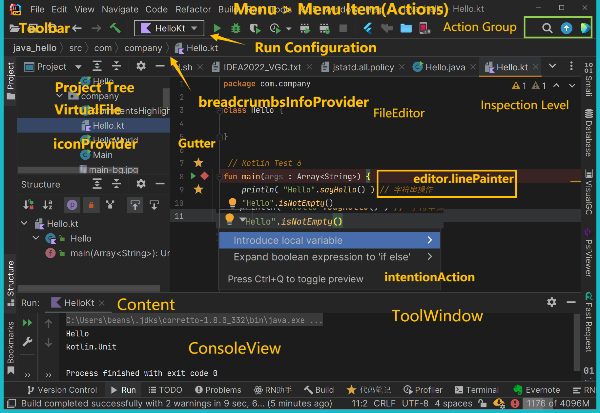
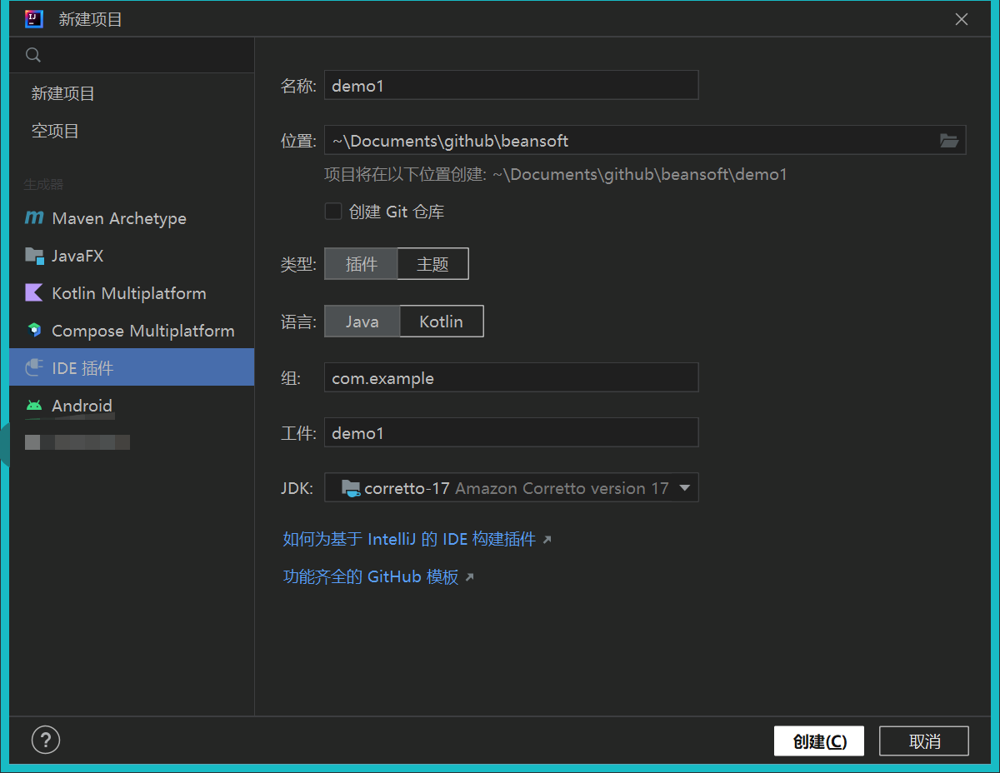
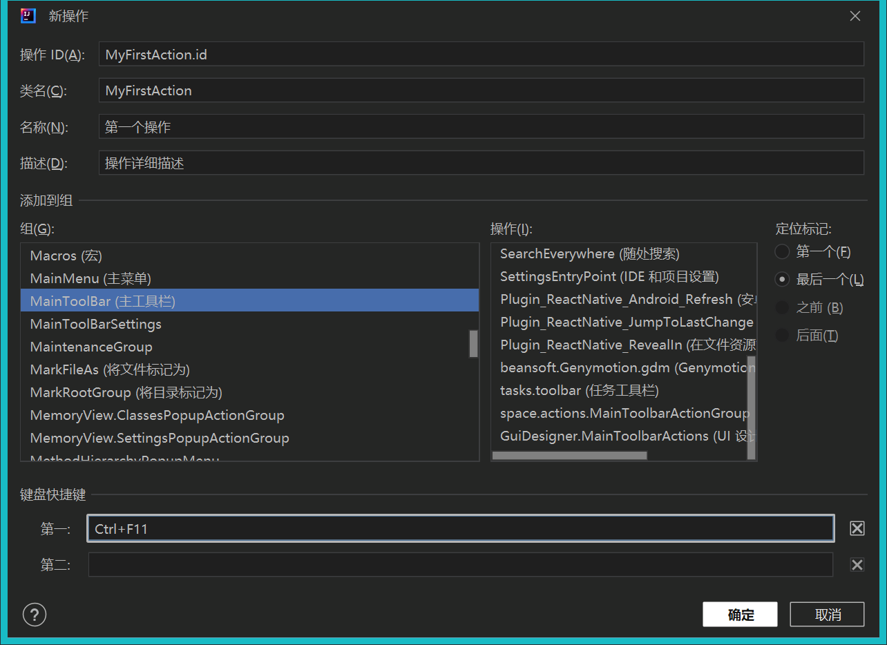

创建Java插件项目
基本UI概念 IDEA 平台的几乎所有部分都是抽象出来的扩展点, 插件开发者不能覆盖底层代码. 
创建插件 选择菜单 文件 | 新建 | 项目... , 选择 IDE 插件 , 然后点击右侧 插件 即可完成创建项目.
 如果首次创建, JDK列表可能为空, 当前默认针对2022.1必须添加 JDK 11
由于首次加载项目需要下载依赖库和IDEA相关的发行包, 需要有稳定的网络连接, 否则项目无法运行
my_plugin
├── .run
│ └── Run IDE with Plugin.run.xml
├── gradle
│ └── wrapper
│ ├── gradle-wrapper.jar
│ └── gradle-wrapper.properties
├── src
│ ├── main
│ │ ├── java
│ │ └── resources
│ │ └── META-INF
│ │ └── plugin.xml
│ └── test
│ ├── java
│ └── resources
├── .gitignore
├── build.gradle.kts
├── gradlew
├── gradlew.bat
└── settings.gradle.kts
默认的 IntelliJ Platform build.gradle.kts 文件 (参考下节).
settings.gradle.kts 设置文件, 包含定义 rootProject.name.
Gradle Wrapper 文件, 尤其是 gradle-wrapper.properties 文件, 指定了构建插件的 Gradle 版本. 首次运行的时候, IntelliJ IDEA Gradle 插件会下载此文件中指定版本的Gradle.
META-INF 文件夹位于默认的 main 源代码集 包含了插件 配置文件 .
Run Plugin 运行配置 .
plugin.xml 内容简介
<!-- 插件配置文件. 读取 https://plugins.jetbrains.com/docs/intellij/plugin-configuration-file.html -->
<idea-plugin>
<!-- 插件唯一ID, 发不同版本时不能修改. 建议用com.xxx.xxx格式 -->
<id>com.example.demo1plugin</id>
<!-- 版本号: 主版本号.次版本号.修订号 https://semver.org/lang/zh-CN/ -->
<version>1.0.0</version>
<!-- 插件名字必须用英文且不能有标点, 可有空格和数字如 My Notes, 不能包含 plugin 字样.
详细解释: https://plugins.jetbrains.com/docs/marketplace/plugin-overview-page.html#plugin-name -->
<name>Demo1plugin</name>
<!-- 插件页显示的开发者名称, 邮件和网址(可用GitHub). -->
<vendor email="support@yourcompany.com" url="https://www.yourcompany.com">YourCompany</vendor>
<!-- 兼容的IDEA版本范围, 发版前请务必测试 -->
<idea-version since-build="213" until-build="223.*"/>
<!-- 插件网页和开发工具中的插件描述内容, 只能用简单HTML标记(文本格式, 段落和列表), 不支持CSS和JS, 不支持iframe.
必须要有简短的英文描述, 之后可以放中文, 否则会审核不通过.
完整内容: https://plugins.jetbrains.com/docs/marketplace/plugin-overview-page.html#plugin-description -->
<description><![CDATA[
Enter short description for your theme here.<br>
<em>most HTML tags may be used</em>
]]></description>
<!-- 更改备注, 建议每个版本更新, 支持中英文 -->
<change-notes><![CDATA[
Initial release of the theme.
]]></change-notes>
<!-- 产品和插件依赖兼容(这部分比较复杂).
Read more: https://plugins.jetbrains.com/docs/intellij/plugin-compatibility.html -->
<depends>com.intellij.modules.platform</depends>
<!-- 扩展列表 -->
<extensions defaultExtensionNs="com.intellij">
</extensions>
</idea-plugin>
build.gradle.kts 内容简介
// Gradle 插件列表
plugins {
id("java") // Java 插件
id("org.jetbrains.intellij") version "1.7.0"
}
group = "com.example"
version = "1.0-SNAPSHOT"
repositories {
mavenCentral() // Maven 仓库地址
}
// 配置 Gradle IntelliJ Plugin
// 阅读更多: https://plugins.jetbrains.com/docs/intellij/tools-gradle-intellij-plugin.html
intellij {
version.set("2021.3") // 编译的 IDEA 版本, 建议修改为 2021.3.3或2022.2.2
type.set("IC") // 支持的目标 IDE 平台
plugins.set(listOf(/* Plugin Dependencies */))// 依赖的插件列表
}
tasks {
// JVM 兼容性版本, 为 Java 11
withType<JavaCompile> {
sourceCompatibility = "11"
targetCompatibility = "11"
}
// 修改插件兼容的IDE版本范围为2021.3到2022.3
patchPluginXml {
sinceBuild.set("213")
untilBuild.set("223.*")
}
// 插件签名(可忽略)
signPlugin {
certificateChain.set(System.getenv("CERTIFICATE_CHAIN"))
privateKey.set(System.getenv("PRIVATE_KEY"))
password.set(System.getenv("PRIVATE_KEY_PASSWORD"))
}
// 自动发布插件任务(可忽略)
publishPlugin {
token.set(System.getenv("PUBLISH_TOKEN"))
}
}
需要修改的地方:
id("org.jetbrains.intellij") version "1.7.0"
==> 升级到最新版 Gradle Intellij 插件
id("org.jetbrains.intellij") version "1.9.0"
tasks {
// Set the JVM compatibility versions
withType<JavaCompile> {
sourceCompatibility = "11"
targetCompatibility = "11"
}
}
需要增加文件编码(否则Win10上会汉字出现乱码) ==>
tasks {
// Set the JVM compatibility versions
withType<JavaCompile> {
sourceCompatibility = "11"
targetCompatibility = "11"
options.encoding = "UTF-8"
}
}
新增操作(Action) 在需要新建操作的Java源码包上点击右键选择 新建 > Plugin DevKit > 操作 , 即可添加Action.  plugin.xml
<actions>
<action id="MyFirstAction.id" class="com.example.demo1plugin.MyFirstAction" text="我的第一个操作"
description="我的第一个操作描述">
<add-to-group group-id="MainToolBar" anchor="last"/>
<keyboard-shortcut keymap="$default" first-keystroke="ctrl F11"/>
</action>
</actions>
public class MyFirstAction extends AnAction {
@Override
public void actionPerformed(AnActionEvent e) {
Messages.showInfoMessage("Hi 你好 IDEA", "Title");
}
}
插件调试 运行工具栏的 调试 Run Plugin 并正常打断点即可.
打包插件 Gradle 工具窗口中双击运行 intellij | Run Plugin , 成品位于目录 build/distributions
测试插件 将打包的插件在IDEA安装后测试能否正常工作.
验证插件 Gradle 工具窗口中双击运行 intellij | runPluginVerifier , 最终报告位于目录 build/reports/pluginVerifier , 确保没有错误信息.
这种简单插件一般都无兼容性问题, 只需要发布前验证一次.
由于首次验证项目需要下载依赖库和IDEA相关的发行包(每个发行包都下载), 请确保磁盘空间足够及稳定的网络连接, 否则无法运行成功, 耗时极大
2022-09-27T20:57:48 [main] INFO verification - Reading IDE C:\Users\beans\.pluginVerifier\ides\IC-2022.3
2022-09-27T20:57:48 [main] INFO c.j.p.options.OptionsParser - Reading IDE from C:\Users\beans\.pluginVerifier\ides\IC-2022.3
2022-09-27T20:58:01 [main] INFO verification - Reading IDE C:\Users\beans\.pluginVerifier\ides\IC-2022.2.2
2022-09-27T20:58:01 [main] INFO c.j.p.options.OptionsParser - Reading IDE from C:\Users\beans\.pluginVerifier\ides\IC-2022.2.2
2022-09-27T20:58:09 [main] INFO verification - Reading IDE C:\Users\beans\.pluginVerifier\ides\IC-2022.1.4
2022-09-27T20:58:09 [main] INFO c.j.p.options.OptionsParser - Reading IDE from C:\Users\beans\.pluginVerifier\ides\IC-2022.1.4
2022-09-27T20:58:17 [main] INFO verification - Reading IDE C:\Users\beans\.pluginVerifier\ides\IC-2021.3.3
2022-09-27T20:58:17 [main] INFO c.j.p.options.OptionsParser - Reading IDE from C:\Users\beans\.pluginVerifier\ides\IC-2021.3.3
2022-09-27T20:58:25 [main] INFO verification - Reading plugin to check from C:\Users\beans\Documents\github\beansoft\demo1plugin\build\distributions\demo1plugin-1.0-SNAPSHOT.zip
常见问题 添加Java相关依赖(找不到PsiClass): plugin.xml
<depends>com.intellij.modules.platform</depends>
<depends>com.intellij.java</depends>
国际化 plugin.xml
<resource-bundle>messages.MyActionBundle</resource-bundle>
<depends>...</depends>
public final class MyActionBundle extends DynamicBundle {
@NonNls public static final String BUNDLE = "messages.MyActionBundle";
private static final MyActionBundle INSTANCE = new MyActionBundle();
private MyActionBundle() {
super(BUNDLE);
}
@NotNull
public static String message(@NotNull @PropertyKey(resourceBundle = BUNDLE) String key, @NotNull Object ... params) {
return INSTANCE.getMessage(key, params);
}
}
Last modified: 28 九月 2022
{kind=link}
{kind=link}
{kind=link}